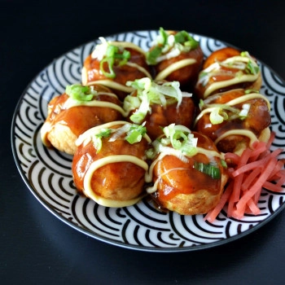
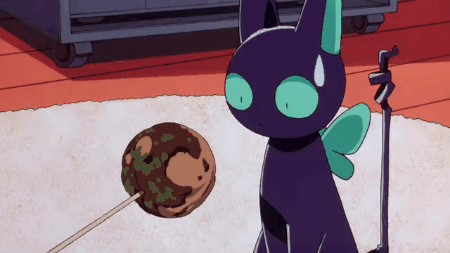

Takoyaki

Descripción
Los takoyakis son uno de los street-foods más populares de Japón. Originarios de Osaka, los takoyakis, traducido literalmente como pulpo-grill, consisten en unas deliciosas bolitas crujientes por fuera, cremosas por dentro.
Normalmente están rellenas de pulpo, cebolleta, tenkatsu (trocitos de tempura) y beni shōga (encurtido de jengibre). Se acompaña con sala para okonomiyaki, mayonesa kewpie (ligeramente más dulce que la mayonesa occidental) y, opcionalmente, cebolleta, beni shōga, katsuobushi o aonori.
Los Takoyakis forma parte de la cocina japonesa Konamon. Kono () significa polvo/harina y Mono () cosas. Esta vertiente de la cocina japonesa hace referencia a los platos elaborados a base de harina como son el Udon, el Takoyaki y el Okonomiyaki.
Ingredientes
Para la masa
- 180 ml dashi
- 60 g harina
- 1 cdita. levadura
- 1/4 cdita. sal
- 1 huevo
- 1 cdita. salsa de soja
Relleno
- 16 trocitos pulpo
- 1 cebolleta cortado a trocitos
- 1 cda. Beni Shouga cortado a trocitos
Aderezo
- salsa para takoyaki/okonomiyaki
- mayonesa Kewpie
Toppings opcionales
- cebolleta cortada a trocitos bien pequeños
- Beni Shouga
- katsuobushi
- aonori
Elaboración de la receta
Preparamos el pulpo
- Cortamos el 16 trocitos de pulpo.
- En una paella, a fuego medio, añadimos el pulpo y lo dejamos cocinar. Este soltará agua.
- Una vez el agua se haya evaporado, el pulpo estará listo.
Preparamos la masa
- Añadimos todos los ingredientes para la masa en un bol: Dashi, harina, levadura, sal, huevos y salsa de soja.
- Mezclamos bien todos los ingredientes hasta que no queden grumos.
Cocinamos los Takoyakis
- Ponemos abundante aceite en la paella para takoyakis y la calentamos a fuego medio alto.
- Vertemos la masa de takoyakis hasta casi llenar los agujeros.
- Añadimos un trocito de pulpo, el beni shōga y la cebolleta. Si hace falta, añadimos un poco mas de masa para cubrir toda la paella (esto suele ocurrir de forma natural al añadirle el pulpo y los demás ingredientes)
- La paella de los takoyakis tiene unos bordes cuadrados definidos para cada Takoyaki. Con unos palitos de madera, "recortamos" estos bordes.
- Giramos los takoyakis 90 grados, dejando que la masa fluya y llene el agujero de forma natural.
- Pasado unos minutos, de hacer falta, añadimos un poco más de masa, sino le damos el último cuarto de vuelta y dejamos acabar de cocinar.
- Los takoyakis estarán listos cuando se empiecen a dorar.
Aderezo
- Finalmente, solo queda añadir la salsa para takoyakis, un poquito de mayonesa Kewpie y, opcionalmente, cebolleta, katsuobushi, aonori o beni shōga
¡Itadakimasu!
